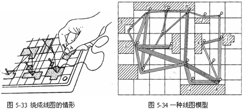

线图的作用与绘制
线图是线路图的一种特殊的表示形式，是按比例绘制的平面布置图或模型。在图上，用线条表示并衡量工人、物料或设备等在规定的活动中所走的路线。
线路图只是近似地按比例作图，在图上表注相应的距离，而线图是用线条表示和度量距离，因此要求准确地按比例绘制。
线图既可以表示物料的运转情况，也可以准确地记录工人的生产或非生产的操作情况。
将程序流程图中有关机器、工作台、库房、各工作点，以及影响移动线路的门、柱、墙等均按比例绘制于木板或图纸上，按照其实际顺序依次从移动起点到终点放置于木版或图纸的方格中。即完成了工作过程的全部线路情况。如果同一工作区有两个以上研究对象时，采用不同颜色的线条绘制。愈是频繁活动的线路，包含的线条就愈多。也可用画线表示工作活动的路线，以线条的数量或按比例的线条宽度表示活动的频繁程度。
